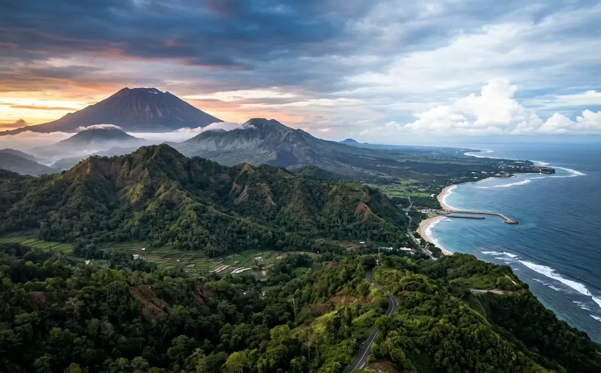

Kaja
Arah gunung utama · Bernilai hulu / sakral
Madya
Titik tengah orientasi dan ruang terbuka
Kelod
Arah pesisir laut · Bernilai hilir / teben
Sumbu Kaja · Kelod
Kaja mengarahkan bagian utama bangunan ke arah gunung suci dan kelod ke arah laut. Posisinya terhadap jarum kompas mengikuti topografi pulau setempat.